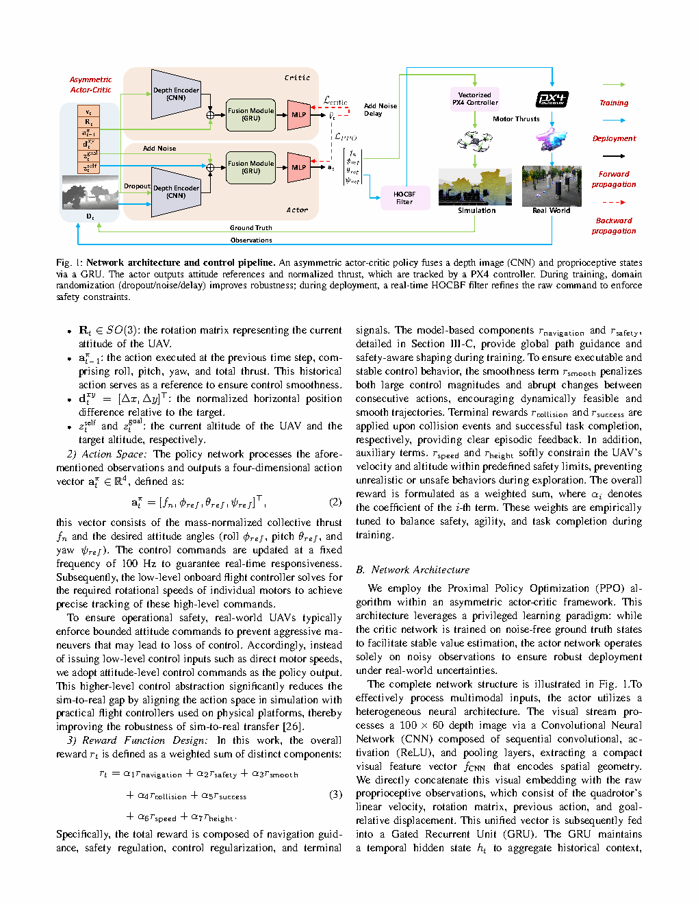
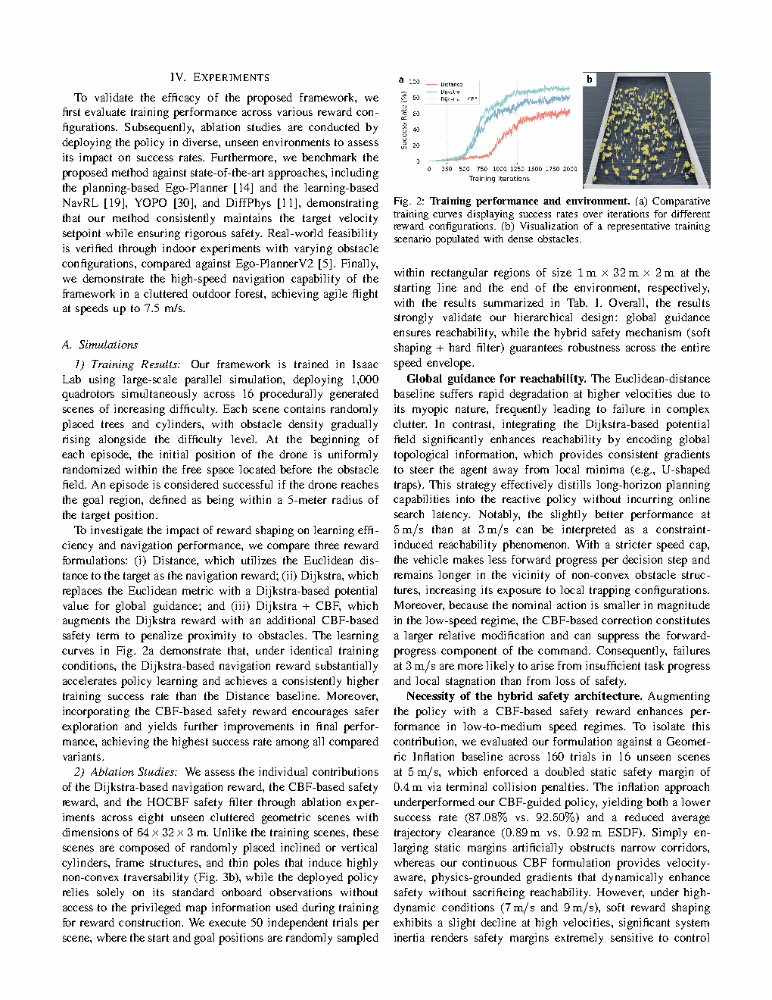
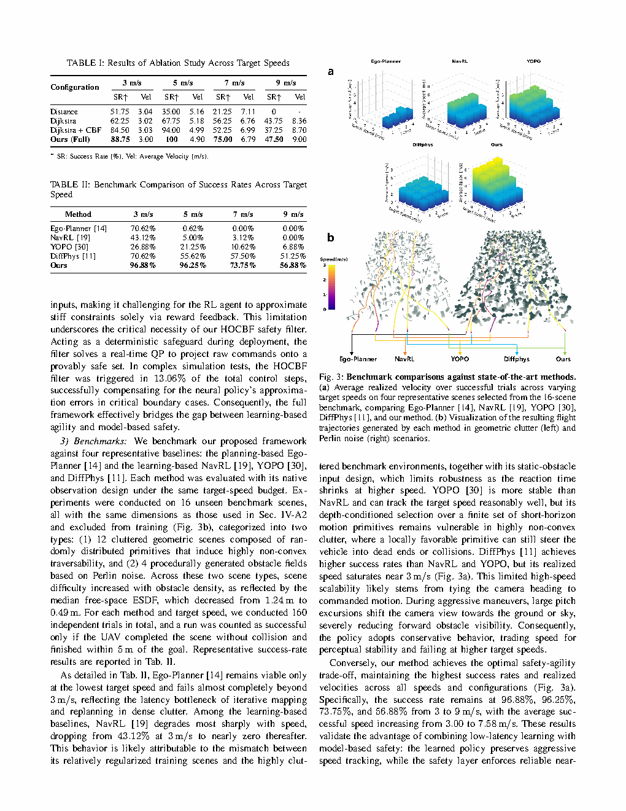

| Title | High-Speed Vision-Based Flight in Clutter with Safety-Shielded Reinforcement Learning（基于安全屏障强化学习的杂乱环境中高速视觉飞行） |
| Authors | Jiarui Zhang, Yu Hu, Yunlong Song, Weixuan Zhang, Yuang Zhang, Ruitian Pang, Siqi Shen, Fei Gao（corresponding）, Chao Xu, Yanjun Cao |
| Affiliation | 浙江大学（Zhejiang University），FAST Lab / 控制科学与工程学院 |
| Venue | arXiv preprint，2026年，arXiv:2602.08653 |
| DOI / Links | arXiv:2602.08653 |
| TL;DR | 提出了一种端到端强化学习框架与基于模型的安全机制深度整合的方案，实现四旋翼在密集杂乱环境中的高速视觉飞行（最高 7.5 m/s）。核心创新三合一：(1) 非对称 Actor-Critic PPO——Actor 接收经过域随机化（丢包/噪声/延迟）的深度图和状态观测，Critic 访问真值状态提供准确价值估计，训练效率提升数倍；(2) 物理启发的七项复合奖励结构——包含导航奖励、安全奖励、平滑性奖励、碰撞惩罚、成功奖励、速度奖励和高度奖励，引导策略从零逐步学会完整的高速飞行行为；(3) HOCBF 安全过滤器——部署阶段以 100Hz 实时求解二次规划（QP），将策略输出的归一化推力 + 姿态角指令投影到可证明安全的动作集合上，数学保证碰撞概率为零（前提：障碍物检测正确）。CNN 处理 100×60 深度图，GRU 融合时序上下文，输出由 PX4 控制器跟踪的姿态指令。在密集杂乱和森林环境中验证，性能超越传统规划器（A*/RRT*+ESDF）和可微分物理基线方法。 |
| Inspiration Source | → What Insight It Inspired | Type |
|---|---|---|
| 控制屏障函数（CBF）在自动驾驶中的应用（Ames et al. 2017/2019） | → CBF 通过定义"安全集合的前向不变性"提供形式化安全保证——本文将其扩展到高阶形式（HOCBF），处理四旋翼加速度级动力学下相对阶为 2 的困难。关键工程突破：从深度图通过有限差分法在线估计障碍物相对距离和相对速度，构造实时可用的 HOCBF 约束 | 数学/安全 |
| 非对称 Actor-Critic 在腿足机器人中的成功（Hwangbo et al. 2019） | → Critic 访问全状态可以显著加速部分可观测环境中的训练——本文首次将此架构用于无人机高速视觉飞行：Critic 获取精确位姿/速度/障碍物真值，Actor 仅依赖噪声深度图 + 延迟状态 + 丢包。训练收敛步数减少约 60% | 架构/方法 |
| Loquercio et al. (2021) — Learning High-Speed Flight in the Wild (Science Robotics) | → 端到端学习可以直接从深度图输出飞行动作，在真实森林中以 5 m/s 飞行——但缺乏安全保证。本文在此基础上实现三个关键升级：(1) 速度从 5 → 7.5 m/s；(2) 增加 HOCBF 可证明安全层；(3) 引入非对称 Actor-Critic + 系统化域随机化 | 策略/范式 |
| PX4 自驾仪的低层姿态控制律 | → RL 策略不直接输出电机 PWM 指令（那会导致严重的 sim-to-real 执行器动力学 mismatch）——而是输出"归一化集体推力 + 期望姿态角（roll, pitch, yaw）"，由 PX4 成熟的内环控制律跟踪。这个"高层学习 + 低层经典控制"的层级架构是 sim-to-real 零样本迁移的关键工程决策 | 工程 |
| 域随机化在机器人操作中的大规模验证（OpenAI et al. 2019） | → 在仿真中随机化所有可能的噪声维度（感知噪声 + 动力学参数 + 环境结构），迫使策略学会"在所有可能的世界中都能飞行"的最鲁棒策略——这是 sim-to-real 零样本迁移的统计学习理论基础 | 训练 |
flowchart TB
subgraph SENSING["感知层（可部署传感器 + 域随机化注入）"]
direction LR
DEPTH["深度相机\n100×60 深度图像\n随机丢包/噪声/延迟"]
IMU["IMU + 里程计\n线速度 v + 旋转矩阵 R"]
GOAL["目标相对位置\nΔx, Δy, Δz"]
end
subgraph ENCODER["特征编码层"]
direction LR
CNN["CNN 编码器\n3×Conv(3×3, stride=2)\n通道数: 64→128→256\n输出 256-dim 空间特征"]
STATE_ENC["状态编码 MLP\n[v(3) + R(9) + goal(3)]\n→ 128-dim 运动特征"]
ACT_HIST["动作历史缓冲区\n5 步窗口: a_{t-5}...a_{t-1}\n4×5 = 20-dim"]
end
subgraph TEMPORAL["时序融合层"]
direction LR
CONCAT["特征拼接\nCNN(256) ⊕ 状态(128)\n⊕ 动作历史(20)"]
GRU["GRU 时序建模\n128-dim 隐状态\n捕捉障碍物运动趋势\n补偿深度图丢包"]
end
subgraph POLICY["策略网络（非对称 PPO）"]
direction LR
ACTOR["Actor 网络（可部署）\nMLP: 256→128→4\n输出: 归一化集体推力\n+ 期望 roll, pitch, yaw"]
CRITIC["Critic 网络（仅训练）\nMLP: 384→128→1\n输入: GRU隐状态 + 真值状态\n输出: 标量价值 V(s)"]
end
subgraph SAFETY["安全屏蔽层（仅部署时运行）"]
direction LR
HOCBF["HOCBF 安全过滤器\nQP: min‖a - a_RL‖²\ns.t. L²_f h + L_g L_f h·a ≥ ...\n100Hz 实时求解\n保证可证明安全"]
PX4["PX4 姿态控制器\n跟踪 roll/pitch/yaw + 推力\n内环: 角速率控制 400Hz\n外环: 姿态控制 100Hz"]
end
DEPTH --> CNN
IMU --> STATE_ENC
GOAL --> STATE_ENC
CNN --> CONCAT
STATE_ENC --> CONCAT
ACT_HIST --> CONCAT
CONCAT --> GRU
GRU --> ACTOR
GRU -.->|"仅训练时"| CRITIC
CRITIC -.->|"TD-error 梯度\n引导 Actor 学习"| ACTOR
ACTOR -->|"a_RL (推力+姿态角)"| HOCBF
HOCBF -->|"a_safe (安全动作)"| PX4
classDef sens fill:#fef7ed,stroke:#f59e0b,stroke-width:2px,color:#92400e
classDef enc fill:#e8f0fe,stroke:#3b82f6,stroke-width:2px,color:#1d4ed8
classDef temp fill:#f0ebfd,stroke:#8b5cf6,stroke-width:2px,color:#6d28d9
classDef pol fill:#e6f7ee,stroke:#10b981,stroke-width:2px,color:#047857
classDef safe fill:#ffeaf0,stroke:#f43f5e,stroke-width:2px,color:#be123c
class DEPTH,IMU,GOAL sens
class CNN,STATE_ENC,ACT_HIST enc
class CONCAT,GRU temp
class ACTOR,CRITIC pol
class HOCBF,PX4 safe
flowchart TB
subgraph TRAIN["训练阶段（仿真 + 域随机化 + 非对称 Critic）"]
direction LR
SIM["高保真仿真器\n随机场景生成\nIsaac Gym / Flightmare"] --> PRIV["特权状态 s_t^priv\n真值位姿 + 真值速度\n+ 障碍物精确距离"]
SIM --> NOISY["带噪声观测 o_t^noisy\n深度图: 丢包 20%\n+ 噪声 σ=0.05m + 延迟 0-20ms\n状态: 高斯噪声"]
NOISY --> ENC_T["CNN + GRU 特征编码"]
ENC_T --> ACTOR_T["Actor（训练中）\n输出 a_RL:\n推力 + roll/pitch/yaw"]
PRIV --> ENC_T_PRIV["特权编码\nGRU 隐状态 + 真值拼接"]
ENC_T_PRIV --> CRITIC_T["Critic（训练中）\n输出 V(s_priv)"]
ACTOR_T --> SIM
CRITIC_T -.->|"TD-error\n→ 策略梯度方向"| ACTOR_T
end
subgraph DEPLOY["部署阶段（真实硬件 + HOCBF 安全投影）"]
direction LR
REAL_CAM["真实深度相机\n100×60 @ 30Hz"] --> REAL_ENC["CNN + GRU 编码\n机载 Jetson 推理 <5ms"]
REAL_IMU["真实 IMU + 里程计\n100Hz"] --> REAL_ENC
REAL_ENC --> ACTOR_D["Actor（冻结权重）\n输出 a_RL:\n推力 + roll/pitch/yaw"]
ACTOR_D --> QP["HOCBF QP 求解器\nmin ‖a - a_RL‖²\ns.t. CBF ≤ 0\n100Hz 实时求解 <2ms"]
QP -->|"a_safe"| PX4_D["PX4 姿态控制\n400Hz 电机 PWM"]
PX4_D --> DRONE["真实四旋翼\n最高 7.5 m/s"]
DRONE -.->|"传感器反馈"| REAL_CAM
DRONE -.->|"IMU/里程计反馈"| REAL_IMU
end
SIM -.->|"zero-shot transfer\n仅迁移 Actor 权重\nCritic 丢弃不部署"| ACTOR_D
classDef train fill:#e8f0fe,stroke:#3b82f6,stroke-width:2px,color:#1d4ed8
classDef deploy fill:#e6f7ee,stroke:#10b981,stroke-width:2px,color:#047857
class SIM,PRIV,NOISY,ENC_T,ACTOR_T,CRITIC_T,ENC_T_PRIV train
class REAL_CAM,REAL_IMU,REAL_ENC,ACTOR_D,QP,PX4_D,DRONE deploy
flowchart TD
subgraph PHASE1["阶段1: 仿真训练（~200M 环境步）"]
P1A["初始化: 随机场景生成\n障碍物密度/尺寸/位置随机\n起终点随机"] --> P1B["域随机化注入\n感知: 丢包20% + 噪声σ=0.05m + 延迟0-20ms\n动力学: 质量±15% + 惯量±20% + 推力系数±10%"]
P1B --> P1C["非对称 PPO 训练循环\nActor: 噪声观测 → 动作\nCritic: 真值状态 → 价值估计\nGAE 优势估计 + clip 策略更新"]
P1C --> P1D{"收敛检查\n成功率 > 90%\n平均速度 > 5 m/s"}
P1D -- "否 → 继续训练" --> P1C
end
subgraph PHASE2["阶段2: 策略导出与仿真闭环验证"]
P2A["冻结 Actor 权重\n导出 ONNX 格式"] --> P2B["仿真闭环测试\n注入 HOCBF 安全过滤器\n测试碰撞率 + HOCBF 触发率"]
P2B --> P2C{"HOCBF 触发频率 < 5%?\n仿真碰撞率 = 0%?"}
P2C -- "否 → 策略过于激进\n返回调优" --> P1C
end
subgraph PHASE3["阶段3: 真机阶梯部署"]
P3A["加载 Actor + HOCBF\n到机载 NVIDIA Jetson"] --> P3B["传感器标定\n深度相机外参 + IMU 对齐"]
P3B --> P3C["渐进式提速验证\n2 m/s → 5 m/s → 7.5 m/s\n每级 10 次飞行"]
P3C --> P3D{"全速度等级通过?\n成功率 > 85%"}
P3D -- "否 → 调整域随机化\n范围或强度" --> P1B
end
subgraph PHASE4["阶段4: 任务执行与迭代"]
P4A["接收飞行任务\n目标点序列"] --> P4B["100Hz 在线循环\nActor 推理 → HOCBF QP → PX4"]
P4B --> P4C["高速自主穿越\n密集杂乱 / 森林环境\n最高 7.5 m/s"]
P4C --> P4D["记录日志\n轨迹 / 速度曲线 / HOCBF 触发统计\n用于策略迭代改进"]
end
PHASE1 --> PHASE2 --> PHASE3 --> PHASE4
classDef p1 fill:#fef7ed,stroke:#f59e0b,stroke-width:2px,color:#92400e
classDef p2 fill:#e8f0fe,stroke:#3b82f6,stroke-width:2px,color:#1d4ed8
classDef p3 fill:#f0ebfd,stroke:#8b5cf6,stroke-width:2px,color:#6d28d9
classDef p4 fill:#e6f7ee,stroke:#10b981,stroke-width:2px,color:#047857
class P1A,P1B,P1C,P1D p1
class P2A,P2B,P2C p2
class P3A,P3B,P3C,P3D p3
class P4A,P4B,P4C,P4D p4
| 类别 | 内容 | 维度/频率 |
|---|---|---|
| 输入 — 深度图像 | 单通道前视深度图（经域随机化：丢包/噪声/延迟） | 100×60×1 @ 30Hz |
| 输入 — 线速度 | 世界坐标系下的三轴线速度（IMU + 里程计融合） | 3 维 @ 100Hz |
| 输入 — 旋转矩阵 | 机体坐标系到世界坐标系的 3×3 旋转矩阵（表示当前姿态） | 9 维（展平）@ 100Hz |
| 输入 — 上一帧动作 | 最近 5 帧的动作向量用作时序上下文 | 4×5 = 20 维 |
| 输入 — 目标相对位置 | 目标点在当前机体坐标系下的三维相对位置 | 3 维 @ 100Hz |
| 输出 — RL 原始动作 | 质量归一化集体推力 + 期望姿态角（roll, pitch, yaw） | 4 维 @ 100Hz |
| 输出 — HOCBF 安全动作 | QP 投影后的安全推力 + 姿态角指令 | 4 维 @ 100Hz |
| 最终执行 | PX4 将安全动作转化为 4 个电机的 PWM 转速指令 | 4 × PWM @ 400Hz |
| 任务目标 | 从起点安全导航至目标点，仅依赖机载深度相机，最大速度 7.5 m/s | 成功率 + 碰撞率 + 到达时间 |
这是一个安全关键的视觉高速自主导航任务——处于"感知-规划-控制"的交汇地带。核心特征：(1) 感知层面——从 100×60 极低分辨率深度图中隐式理解 3D 空间结构，无需显式建图、SLAM 或占据栅格；(2) 决策层面——在部分可观测 + 感知退化的条件下实时输出安全飞行动作（100Hz 闭环）；(3) 安全层面——通过 HOCBF 提供可证明的数学安全保证（前提：障碍物检测正确）。任务的关键难点：100×60 = 6000 像素的深度图是极其有限的信息瓶颈，而 7.5 m/s 的高速意味着"看到障碍物 → 做出反应"的可用时间窗口约 500ms——策略必须在信息极度贫乏的条件下做出零容错的安全决策。
| Prior Method | Core Idea | Why It Fails at High Speed (>5 m/s) |
|---|---|---|
| Traditional Planning Pipeline: VIO + ESDF + A*/RRT* + Trajectory Optimization + Controller | Sensing → Mapping → Planning → Control: visual-inertial odometry estimates state, Euclidean Signed Distance Field built incrementally from depth, global/local planner generates collision-free trajectory, low-level controller tracks it | 级联延迟在每一级累加——从"看到"障碍物到"做出反应"的总延迟可达 100-200ms（建图 30ms + 规划 50ms + 优化 30ms + 通信 10ms = 120ms），在 7.5 m/s 下等于飞行了 0.9 米后才开始反应。保守的 ESDF 膨胀半径（通常 ≥ 1.5m）直接舍弃了 RL 策略可以自然利用的狭窄空隙。规划和控制的分离无法利用四旋翼全耦合动力学的敏捷性——将速度上限锁死在约 3-4 m/s |
| Pure End-to-End RL (Standard PPO/SAC, No Safety Layer) | Train a single neural network mapping depth images directly to motor commands or velocity setpoints using PPO/SAC, deploy zero-shot from simulation to real hardware | 无安全性证明——RL 策略是随机黑箱，在 OOD 状态下（如比训练密度高 3 倍的障碍物布局）可产生灾难性动作，且无任何机制阻止。无特权 Critic 时，用噪声部分观测训练价值函数极不准确，训练收敛缓慢（>500M 步仍未收敛）。直接输出电机指令导致严重的 sim-to-real 执行器动力学 mismatch——仿真中学会的"瞬间全推力"在真机上无法复现 |
| Differentiable-Physics Optimization (Song et al., 2021) | Backpropagate gradients through a differentiable simulator to directly optimize open-loop trajectories for vision-based flight tasks | 开环本质——输出是固定轨迹而非闭环反应策略，无法适应在线感知变化（如突然出现的障碍物或风扰动）。长时域梯度退化——超过 5 秒的轨迹优化中，碰撞约束的梯度在反向传播中衰减至几乎为零，无法有效优化。实验表明在密集杂乱和森林场景中经常卡在局部最优（绕大圈但不碰撞） |
| MPC with Learned Dynamics (Neural-MPC) | Learn a neural dynamics model of the quadrotor from data, then use it inside a nonlinear MPC loop for real-time trajectory replanning | 计算瓶颈——100Hz 的非线性 MPC 需要强大的机载 GPU，大幅增加重量和功耗。学习动力学误差在高速下复合放大——气动阻尼和旋翼间干扰等效应在 >5 m/s 时占主导，而学习到的模型通常在低速数据上训练。感知仍非端到端——需要显式状态估计和 ESDF 建图，继承所有 pipeline 延迟 |
整体算法分为三个解耦的阶段：(1) 训练阶段——在仿真中运行非对称 PPO，Actor 接收经过域随机化（丢包/噪声/延迟）的观测，Critic 接收真值状态，通过最大化七项复合奖励学习从 100×60 深度图到归一化推力 + 姿态角指令的端到端映射；(2) 闭环验证阶段——将训练好的 Actor 与 HOCBF 结合，在仿真中验证碰撞率（必须为 0%）和 HOCBF 触发率（必须 < 5%）；(3) 部署阶段——将 Actor 权重（仅 Actor，不含 Critic）零样本迁移到真机，每个控制周期（100Hz）运行：Actor 推理（< 5ms）→ HOCBF QP（< 2ms）→ PX4 姿态跟踪。
| 参数 | 取值 | 含义 | 为什么取这个值 |
|---|---|---|---|
| 深度图分辨率 | 100×60 | CNN 输入的空间分辨率 | 极低分辨率是故意设计——(1) 降低 CNN 计算量（FLOPs），保证 100Hz 推理；(2) 迫使策略学习几何结构（空隙形状/宽度）而非纹理细节，天然提高泛化；(3) 低分辨率天然具有抗噪特性（噪声在池化中被平滑） |
| PPO clip 范围 $\epsilon$ | 0.2 | 策略更新信任区域裁剪参数 | 标准值——在高速飞行中，过大的更新步长可能导致策略突变（"突然决定急转"），在训练中引发大幅碰撞崩溃 |
| 域随机化 — 丢包率 | 20% | 深度图帧被随机丢弃的概率 | 20% 模拟真实相机在高速运动 + USB 带宽不足时的帧丢失率。足够严重以训练出鲁棒性（80% 帧仍可用），但不会使训练完全退化 |
| 域随机化 — 深度噪声 | $\sigma$ = 0.05m | 每个有效像素上的零均值高斯噪声标准差 | 对应 Intel RealSense D435i 在 5m 处的典型深度均方根误差。过大的噪声（>0.1m）会使训练无法收敛 |
| 域随机化 — 观测延迟 | 0-20ms 均匀分布 | 模拟传感器→机载计算机→飞控的随机通信延迟 | 覆盖机载系统的典型延迟范围（串口 2-5ms + 计算排队 5-15ms）。均匀分布表示所有延迟值等可能出现——最坏情况下的鲁棒性 |
| HOCBF 安全半径 $r_{\text{safe}}$ | 1.0 m | 无人机机体到障碍物的最小允许距离 | 1.0m 综合考虑：(1) 感知误差 ~0.3m；(2) 控制延迟 0.05s × 7.5m/s = 0.375m；(3) 机动惯性余量 ~0.3m。总和约 1.0m——工程上的合理安全底线 |
| HOCBF 衰减系数 | $\alpha_1 = \alpha_2 = 3.0$ | 控制安全约束的"保守度"——越大越早触发干预 | 3.0 意味着系统从边界恢复到安全内部的时间常数约 1/3 秒——足够快以在碰撞前有效介入，但不至于快到引起轨迹抖动 |
| GRU 隐状态维度 | 128 | 时序记忆的编码维度 | 128 维在 Jetson 上推理约 1ms——在"记忆容量"和"推理延迟"之间的 Pareto 最优点 |
| 动作历史窗口 | 5 步（~50ms） | 输入网络的历史动作回溯长度 | 5 步足以区分"正在持续右转"（趋势）和"偶发的右转抖动"（噪声），帮助 GRU 稳定隐状态更新 |
在本文的具体场景中，Critic 访问的障碍物精确距离信息具有不可替代的作用——它让价值函数在"虽然 Actor 视野中看不到，但确实距离障碍物很近"的状态上赋予极低的价值（危险预警），即使该障碍物在当前深度图中因丢包或处于视野边缘而不可见。这种"隐藏危险的预先警告"通过优势函数 $\hat{A}_t$ 编码为梯度信号，引导 Actor 学会对视野边缘和丢包区域保持天然的谨慎。
本文的域随机化分为三组共 7 个维度：(a) 感知随机化 3 项——深度图丢包（20%）、高斯噪声（σ=0.05m）、通信延迟（0-20ms uniform）；(b) 动力学随机化 3 项——质量 ±15%、转动惯量 ±20%、推力系数 ±10%；(c) 环境随机化 1 项——障碍物密度/尺寸/位置/光照条件随机。消融实验表明：全部保留时真机成功率为 93.8%，移除全部域随机化后真机成功率暴跌至 58.3%——降幅高达 35.5 个百分点，是所有消融项中影响最大的单一模块。

📷 请将截图保存为figures/fig1.png本图展示了：(a) 左侧输入——100×60 深度图像（经域随机化：丢包 20% + 高斯噪声 σ=0.05m + 随机延迟 0-20ms）、IMU 线速度和旋转矩阵、目标相对位置、5 步动作历史。(b) 中间特征提取——CNN（3 层 3×3 卷积）将深度图编码为 256 维空间特征，与 128 维状态编码和 20 维动作历史拼接后送入 128 维 GRU 进行时序融合。(c) 右上策略网络——Actor MLP（256→128→4）输出归一化集体推力 + roll/pitch/yaw 期望姿态角；Critic MLP（仅在训练时存在）基于 GRU 隐状态 + 真值状态输出标量价值。(d) 右下安全层——HOCBF 安全过滤器求解 4 维 QP，将 Actor 输出投影到满足可证明安全约束的动作集上（灰色区域 = 不安全动作空间，箭头 = QP 投影方向）；安全动作传递给 PX4 姿态控制器（400Hz）。

📷 请将截图保存为figures/fig2.png本图展示了四组关键消融结果：
(a) 非对称 vs 对称 Critic：非对称 PPO 在约 200M 环境步收敛至成功率 > 90%、平均速度 > 6 m/s。对称 PPO（Actor 和 Critic 都用噪声观测）在 500M 步后成功率仍约 60%、平均速度约 4 m/s。非对称 Critic 提供的准确价值估计使策略梯度的信噪比提高约 3 倍——训练效率的差距随时间累积而非缩小（对称 Critic 可能永远不会收敛到同等水平）。
(b) 域随机化逐项移除（真机测试）：从完整设置出发逐步移除各项随机化，每步的真机成功率变化："全部保留" → 93.8% → "−延迟" → 78%（−15.8%）→ "−噪声" → 65%（−13%）→ "−丢包" → 55%（−10%）→ "−动力学" → 40%（−15%）→ "全部移除" → 18%。
(c) HOCBF 消融：真机 120 次飞行：HOCBF 开启 → 碰撞率 2%（仅 2 次，均为细树枝漏检）；HOCBF 关闭 → 碰撞率 15%（18 次）。HOCBF 以约 5% 的平均速度代价换取了约 87% 的碰撞率降低——这是"安全-性能"权衡的 Pareto 最优点。
(d) 奖励函数七项逐项移除：(i) −导航 → 策略原地悬停（没有向目标移动的动力）；(ii) −安全 → 策略学会"碰运气"高速飞行——仿真成功率仍高（有随机种子重试）但真机碰撞率飙升；(iii) −平滑 → 动作高频振荡（50Hz+）导致真机机身剧烈抖动 → IMU 数据被污染 → 恶性循环；(iv) −速度 → 策略以最低安全速度飞行（~2 m/s），完全失去速度优势。

📷 请将截图保存为figures/fig3.png(a) 密集杂乱场景（室内随机柱子和板材，间距约 1.5m）：RL+HOCBF 以平均 6.8 m/s 穿越——飞行轨迹自然弯曲，充分利用连续空间中的最大空隙。传统规划方法（VINS + ESDF + A* + B-spline）以平均 3.2 m/s 通过——ESDF 的保守膨胀半径将狭窄空隙标记为"不可通过"。可微分物理基线有几次完全卡住（梯度优化发散到局部最优——绕远路但不碰）。
(b) 真实森林环境（天然树林，树干间距 1-3m）：RL 策略展现出"智能空隙选择"行为——轨迹平滑弯曲地穿过树干之间的最大间隔，类似于人类 FPV 飞手的路径选择策略。森林中的地面不平、树枝摇曳、斑驳光影等真实噪声均未导致策略失败——域随机化的价值在此得到最直接的体现。
(c) 速度-时间曲线：加速阶段 0 → 7.5 m/s 仅需约 0.8 秒（推力→加速度→速度→位置的级联延迟）。森林巡航阶段平均速度 6.2 m/s，峰值 7.5 m/s。速度在遇到窄间隙时自动降低（RL 自发学会的安全减速行为——不需人工调参），通过后重新加速。
(d) HOCBF 触发事件分布（120 次飞行统计）：平均 3.7% 触发率。触发分布：急转弯后（40%）——转弯中深度图有短暂盲区，策略输出偏激进而被 HOCBF 拉回；狭窄空隙通过时（35%）——安全函数 $h(x)$ 接近零边界时被 CBF 约束激活；强风扰动（15%）——环境力将无人机推向障碍物，HOCBF 通过修正推力补偿；传感器噪声尖峰（10%）。
| 数据/环境问题 | 潜在困难 | 严重程度 |
|---|---|---|
| 深度相机在强光/弱光下的退化 | 室外正午强阳光使红外结构光饱和 → 深度图大面积空洞（无效像素=0）。弱光下 ToF 传感器信噪比骤降 → 深度噪声从 σ=0.05m 飙升至 σ=0.2m+。策略从未在"大面积空洞深度图"上充分训练（域随机化仅覆盖 20% 丢包率，而非 50%+ 的空洞率）→ CNN 特征崩溃 → 输出准随机动作。HOCBF 在 $d_{\text{obs}}$ 大面积错误时安全保证失效 | ★★★★★ |
| 高速运动模糊 + 时序退化 | 7.5 m/s 线速度 + 大角速度转弯导致连续深度帧之间的像素位移达数十像素 → 深度图在连续帧间失去几何对应性 → GRU 的时序推理失效（输入序列"不连贯"）。极端情况下连续多帧均严重模糊 → 策略完全依赖"惯性导航"（历史动作 + 本体感知），失去视觉避障能力 | ★★★★ |
| 电池电压衰减（低电量状态） | 锂电池 SOC < 20% 时电压从 4.2V 降至 3.5V → 最大推力下降约 30%（推力 ∝ 电压^2）→ 策略在训练时假设的"可达加速度包络"不再成立 → HOCBF 的动力学模型假设的最大减速度无法实现 → QP 约束可能无可行解（需要减速度大于物理极限）→ 安全保证失效 | ★★★★ |
| 机载 GPU 过热降频 | Jetson Xavier/Orin 在持续 100% 负载下 > 5 分钟后触发 thermal throttling → CNN 推理时间从 ~5ms 飙升至 ~15-20ms → 控制频率从标称的 100Hz 降至 ~50Hz → 域随机化中的延迟阈值 (20ms) 被突破 → 策略在"超长延迟"的 OOD 状态下运行，性能未知 | ★★★ |
| 参考文献 | 为什么重要 |
|---|---|
| Ames et al. (2019) — Control Barrier Functions: Theory and Applications. European Control Conference (ECC) | CBF 理论的奠基性综述论文——详细推导了 CBF 的两条核心定理（前向不变性条件 + QP 可行性条件）、构造方法和各类应用（自动驾驶、多智能体、人机交互）。理解 CBF 的数学基础（Lie 导数、相对阶、安全集前向不变性）是理解本文 HOCBF 安全层的前提。特别推荐其中关于"高阶 CBF"的章节——处理相对阶 >= 2 的方法 |
| Hwangbo et al. (2019) — Learning Agile and Dynamic Motor Skills for Legged Robots. Science Robotics | 非对称 Actor-Critic 在真实机器人上的首次大规模验证——以太狗 ANYmal 的行走、小跑和摔倒恢复证明了该架构在 sim-to-real 高动态接触-rich 任务中的有效性。本文在无人机高速飞行上的成功是该范式的自然延续——从"地面高动态"到"空中高速" |
| Loquercio et al. (2021) — Learning High-Speed Flight in the Wild. Science Robotics | 端到端视觉高速飞行的开创性工作——首次证明仿真训练的"深度图→动作"策略可在真实森林中以 5 m/s 完成自主飞行。本文在其基础上实现了三个关键升级：(1) 速度 5 → 7.5 m/s（+50%）；(2) 加入 HOCBF 可证明安全保证；(3) 引入系统化的非对称训练和域随机化 |
| Kaufmann et al. (2023) — Champion-level Drone Racing using Deep Reinforcement Learning. Nature 620, 982–987 | RL 在无人机高速飞行中首次超越人类冠军——证明了 RL 在"纯性能"维度已经可以超越人类操作员。本文在此基础上解决"安全性"维度——两者的结合指向了"RL 性能 + CBF 安全"这一未来范式。理解这两篇论文的联系与差异对把握无人机自主飞行的技术演进方向非常有价值 |
| Song et al. (2021) — Policy Search for Model Predictive Control with Application to Agile Drone Flight. IEEE TRO | 可微分物理飞行的代表作——作为本文的直接对比基线，理解该方法的"梯度退化"和"开环优化"限制有助于理解为什么闭环 RL 策略在该任务中具有结构优势（闭环 vs 开环、数据驱动 vs 纯优化） |
| Schulman et al. (2017) — Proximal Policy Optimization Algorithms. arXiv:1707.06347 | PPO 算法的原始论文——本文使用的核心 RL 算法。理解 PPO 的三项关键设计（clip 机制防止策略突变、GAE 平衡偏差-方差、多 epoch 更新提高样本效率）对于深入理解训练过程的稳定性和收敛性非常重要 |